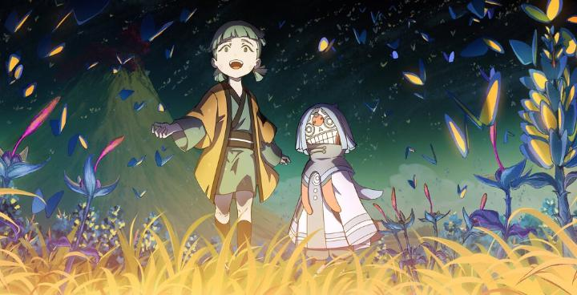
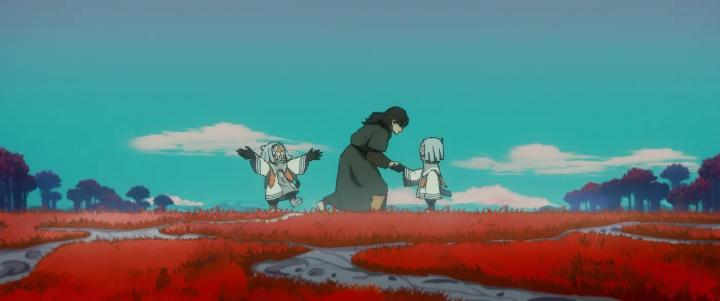

I went into "Another World" completely blind. And it likes to keep its story close to its chest, weaving multiple stories across different periods of time until a big reveal towards the end. So it's a bit hard to describe, but let's try...Depicting a fantasy version of the afterlife, the "Another World" is the land where the deceased arrive, and must venture to a waterfall where their souls will be reborn into new lives back in the human world. Short ceramic masked characters, the Soulkeepers, help explain to the souls that they've died, and guides them to acceptance, to let go of any regrets before their reincarnation. If a human hasn't truly accepted their death, or still has powerful regrets, their rebirthed soul (depicted as a red string) will have knots in it, and too many knots become sources of pure evil and mallace to corrupt the human world. The movie follows Gudo, one such soulkeeper who meets a young girl, Yuri, who's lost and looking for her younger brother (not realizing she's dead). Gudo postpones explaining the truth for a while, helping Yuri search for a non-existant brother across the mysterious lands of Another World, and learning a bit about humans through their time together. Then the film cuts to other stories with Gudo as a witness: one of a tragic princess mourning her murdered father and King, another of a desparate man willing to make a deal with the Devil to save his village, and more... Each of these stories has drama, twists and revelations. Not unexpected for Chinese dramatic fiction, but I don't think I've seen stories quite like these in animation (not even in anime). In that sense, this felt novel and refreshing. The stories become surprisingly violent and bloody, and most of all, tragic. Exactly WHY we're seeing a seemingly unconnected anthology of stories, with only Gudo as the shared conduit, is a mystery until the end, and I won't spoil it. But it does explain why we, the viewer, are witness to so many tragic stories, each fascinating, but increasingly difficult to watch. The theme is to ultimately be life-affirming, and it gets there eventually, but this is a depressing movie! It's in the complexity of the multi-generational adventure and the emotional payoff for all these stories that gives the plot value. It's messy, but I was ultimately impressed with the writing.But complex writing requires complex direction. If there's one major flaw in "Another World," it's that the direction and editing doesn't always keep up. For example, those cuts from one story to another? No transition to indicate the time period changed at all. Makes you appreciate how good Christopher Nolan or Satoshi Kon was at this sort of thing. And with so many expostion drops explaining the details of each setting, it's easy to miss a bit of crucial information.

The visuals are also a mixed bag, but generally good. From posters and advertisements, you'd be forgiven in thinking this was a Japanese anime, but the visual design borrows from both Japan, China, and European comics (especially for character faces). There's bold colour, and some breathtaking visual landscapes in "Another World" (a bit like generic digital fantasy art or A.I. art, but beautiful to see in motion on film). Animation is a little static at times though, just a slight step down from more confident productions. More frustratingly, there are huge chunks of the movie where characters are replaced with full CGI models. Is it because there's a lot of action in those scenes? Sometimes yes, but often no. To its credit, it still looks good both ways, but clearly distinct from each other, and the change is distracting. It's as if the production couldn't decide whether to go fully 2D or 3D and didn't bother to update the test footage, or more likely, they outsourced about 30 percent of the film to a different studio that didn't know what 2D animation was. So sure, there's a few minor stumbles. "Another World" has the heart of an indie film with big ambition. Even though those ambitions might have been bigger than the studio could handle, it's mostly a success, and this is exactly the type of fantasy I appreciate. - "Ani" More reviews can be found at : https://2danicritic.github.io/ Previous review: review_Angel_Beats Next review: review_Appleseed